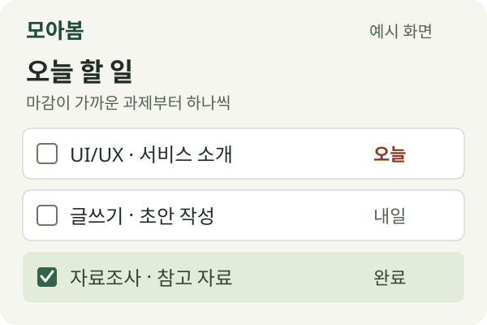

흩어진 과제와 마감일을 한곳에 모아, 오늘 할 일을 가볍게.
모아봄은 여러 수업의 과제와 마감일을 정리하고 싶은 대학생을 위한 과제 관리 서비스입니다.
학교 공지와 메모를 오가며 과제를 찾느라 번거로웠나요? 수업별 할 일을 모으고, 마감이 가까운 과제부터 살펴보고, 끝낸 과제를 확인할 수 있는 서비스를 기획하고 있습니다.

모아봄에서 과제와 마감일을 모아 보는 화면 예시입니다.
과목 이름, 과제 내용, 마감일을 함께 정리해 여러 수업의 할 일을 한곳에서 확인합니다.
제출 기한이 가까운 과제부터 확인하며 오늘 먼저 시작할 일을 정합니다.
끝낸 과제를 완료로 표시하고 아직 남은 과제를 구분해 다음 할 일을 찾습니다.
과목 이름과 과제 내용, 마감일을 입력합니다.
마감일을 확인하고 먼저 진행할 과제를 정합니다.
제출을 마친 과제에 완료 표시를 하고 남은 일정을 확인합니다.
모아봄의 출시 소식을 전할 알림 기능을 준비하고 있습니다.
현재는 이메일 형식만 확인할 수 있습니다. 알림 신청 접수와 이메일 발송은 아직 지원하지 않습니다.
2026 모아봄